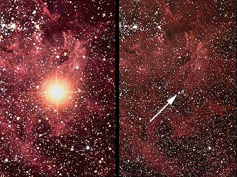

Credit: David Malin, Anglo-Australian Observatory
Supernovae are exploding stars which are broadly classified into two main types depending on the type of star which explodes. The progenitors of a Type Ia supernova (SNIa) is a white dwarf accreting matter from a companion, while the progenitors of core-collapse supernovae are massive stars at the end of their lives.
Supernovae are transient objects. They appear suddenly as a bright star (that can outshine an entire galaxy) at a random position in the sky, and fade relatively quickly never to be seen again. For this reason they are difficult objects to find and study, and astronomers have now established several supernova searches dedicated to locating new supernovae and obtaining rapid and extensive follow-up observations of these objects.
With such rapid follow-up, Type Ia supernovae have become one of the primary distance indicators in astronomy, helping to tie down the Hubble constant and revealing that the Universe is, in fact, accelerating.
Supernovae leave behind a supernova remnant, which are often beautiful objects that fade over tens of thousands of years before enriching the interstellar medium with a multitude of chemical elements.
See also: Type Ib supernova, Type Ic supernova, Type II supernova, Type IIn supernova.